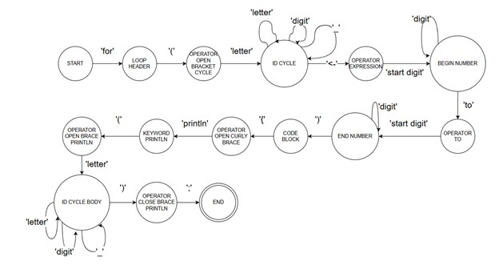

Так как грамматика принадлежит классу автоматных, или регулярных, метод анализа реализован пошаговым переходом по графу конечного автомата, соответствующего грамматике G[Z].
Каждое состояние автомата соответствует этапу обработки входной строки, а переходы определяются терминальными символами. Анализ продолжается до достижения допускающего состояния либо до фиксации синтаксической ошибки.
На рисунке 1 представлен граф автоматной грамматики. Листинг программы представлен в приложении Б.
